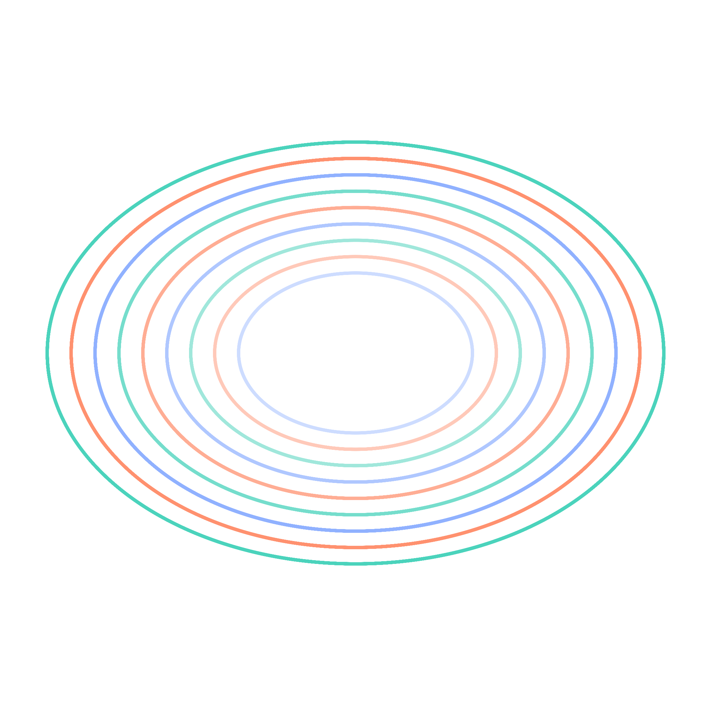

FYDP I Poster / United International University · Dept. of CSE
Solving the Lorenz ODE System
using Optimal ANN Architectures
Can a plain feedforward ANN, with no physics in the loss, learn a coupled nonlinear ODE system, and which architecture does it best?
SupervisorDr. Muhammad Nomani KabirProfessor, Dept. of CSE, UIU
Course TeacherDr. Md. Motaharul IslamProfessor, Dept. of CSE, UIU
Team_ParaDox
Ikramul Hasan MoralMd. Abu BakarSamiur Rahman OmlanFariha IslamMd. Touhidul Islam
01
The Problem
Classical solver
Step-by-step, mesh-bound, re-runs per query
vs
Trained ANN
One direct map t → (x, y, z), mesh-free
Central question: can a plain ANN, trained only on data with no physics in the loss, learn this coupled system — and which architecture does it best?
02
Objectives
Trusted baseline
RK4 + SciPy, cross-checked
Search the space
Depth × width × activation
Accuracy vs cost
Error and run-time, together
Benchmark
Best ANN vs PINN literature
03
The System
Reduced form · k = 2, l = 1
ẋ = −0.10 y z
ẏ = +1.60 x z
ż = −0.75 x y
Three coupled nonlinear ODEs: simple to state, hard to integrate accurately.
RK4 reference solution on t ∈ [0, 1]: the data the ANN learns.
Long-term behaviour on t ∈ [0, 50]: bounded, quasi-periodic orbits.
04
Network & Search Space
×
×
Activationnonlinearity
tanhReLUsigmoidGELUSwish
= 60 candidate architectures
05
Two-Phase Study
Phase 1
60
architecture search · Adam fixed
Phase 2
9
optimizer sweep · top-3 nets
Architecture first, optimizer second; the two effects stay separable.
→
Pipeline
Generate
RK4 + SciPy reference
↓
Split
80 / 20 train–validation
↓
↓
06
How We Score
Inference time
cost of a single query once trained
07
The Gap
| Prior work | Lorenz-1960 | Plain ANN | Arch. sweep |
|---|
| Matthews & Bihlo |
|
|
|
| Lagaris et al. |
|
|
|
| Lau & Werth |
|
|
|
| Mall & Chakraverty |
|
|
|
| Ours · Team_ParaDox |
|
|
|
No prior study sweeps plain-ANN architecture on Lorenz-1960.
08
Baseline Verified
target < 10⁻¹⁰
1.8×10⁻²²
solver-agreement MSE (RK4 vs SciPy)
6.06×10⁻¹¹
max pointwise disagreement
target beaten by ten orders of magnitude
Two independent solvers agree before any ANN is trained.
Pointwise RK4 − SciPy disagreement across the trajectory.
09
Status & Next
FYDP-I · done
17-paper review, verified dual-solver baseline, locked 69-run design
FYDP-II · next
Run the experiments, repeat seeds, benchmark against PINNs
No claims yet. Accuracy results follow once FYDP-II runs.
69
controlled training runs